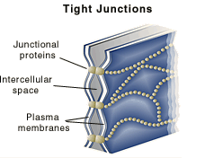
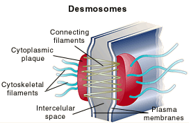
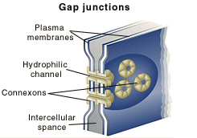

The Biology Project > Cell Biology > Cell Membranes > Problem Set
Cell Membranes Problem Set
Problem 13: Cell junctions
Tutorial to help answer the question
A. gap junctions, desmosomes, and tight junctions. B. desmosomes, tight junctions and gap junctions. C. tight junctions, gap junctions, and tight junctions. D. gap junctions, tight junctions, and desmosomes. E. tight junctions, desmosomes, and gap junctions.
Tutorial
Cell junctions
|
Tight junctions For example, the cells that line the intestine are responsible for taking up nutrients from the gut. The nature of the material taken up must be controlled to block unwanted substances from entering our bodies. The control comes from the fact that materials must pass through receptors on the epithelial cell membranes. Tight junctions form a water tight seal and prevent material from passing between cells. |
 |
| Desmosomes Desmosomes form links between cells, and provide a connection between intermediate filaments of the cell cytoskeletons of adjacent cells. This structure gives strength to tissues. |
 |
| Gap junctions Finally, the need for signaling is a function of gap junctions that form pores connecting adjacent cells. Small molecules and electrical signals in one cell can pass through the gap junctions to adjacent cells. This process allows tissues to coordinate responses to stimuli. For example, gap junctions permit coordinated movements of muscles leading to childbirth. |
 |
The Biology Project > Cell Biology > Cell Membranes > Problem Set
Department of Biochemistry and Molecular Biophysics
University of Arizona
May 2002
Revised: August 2004
Contact the Development Team
http://www.biology.arizona.edu
All contents copyright © 2002-04. All rights reserved.